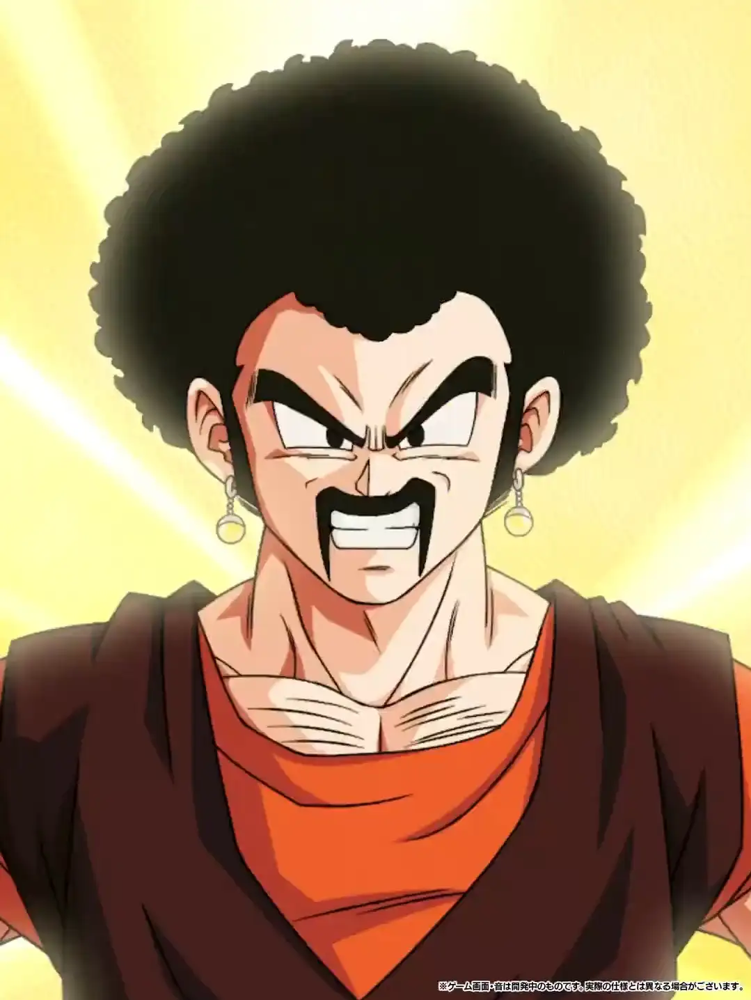

Hercule

DATA DE LANÇAMENTO: 28/01/2025


Build recomendada
O melhor SSR secundário de todos?
Esse cara dá Ki e 50% de ATK e DEF pra Earth-Protecting Heroes, tem 90% de redução de dano pra 1 golpe por turno e depois de levar esse golpe tem 85% de chance de desvio
Como se não bastasse isso, ele tem uma das melhores OSTs do jogo e uma das Actives mais insanas

Convidaram a melhor fusão pro aniversário.
Nota dos Links:
06/10
Nota das Categorias:
07/10
Você chegou ao fim dessa página!
Obrigado por ler tudo, e fica a vontade pra ver outras